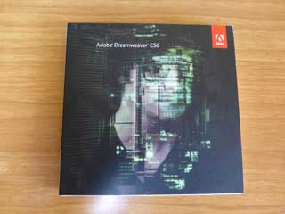
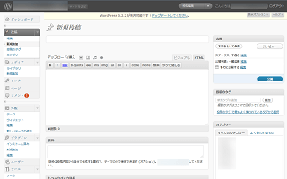
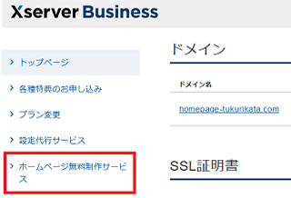
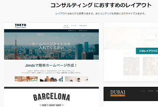

会社ホームページの作り方
会社のホームページを自分で作る場合、作成費用はドメイン代とレンタルサーバー代、あるいは素材費用ぐらいしかかからないため、実費でいえば、せいぜい年間１万円程度でも済ませることができます。
けれども、これをウェブ制作業者に依頼した場合、その作成費用は10万円～数十万円程度にまで跳ね上がります。他にも管理費用などが毎月かかるケースも多いです。
→ ホームページ制作会社の相場
これではぼったくりのようにも思えてしまいますが、それぞれの案件に応じて、その都度ウェブデザインを考える必要がありますし、打ち合わせや写真撮影、画像編集の手間、それにかかる人件費なども考えるとそう高くもない金額といえます。
定期的な依頼があるならまだしも、たいていは１回のみの依頼になるわけですし、個々のケースに応じて作成する必要があるため、費用を10万円程度からに設定しないとビジネスとしては成り立ちません。
そのような意味で、業者に制作を依頼して10万円以上かかるのは仕方がないと思います。
けれども、クオリティーは高くなくても、単に会社情報を公開しておくだけの簡単なホームページでよい場合、当サイトを参考に自分で作成してしまうとコスト削減につながることでしょう。
会社ホームページを自分で作るのに適した企業とは？
自分で会社のホームページを作るのに適した企業でいえば、設立したばかりで法人口座を作るのに自社サイトが必要とか、あるいは名刺を作成するのに、とりあえずでも会社のドメインでメールアドレスを作っておきたいなどのケースがあてはまります。
起業したばかりで社会保険にも未加入、自分の役員報酬も未払いの状態で、売掛金の入金もまだまだ先というような社長さんは自分で作ってしまうとよいでしょう。
■自分で作るのに適した会社
- 会社情報のみでよい企業
- 法人口座の開設でホームページが必要
- 名刺に記載するメールアドレスが必要
- サイト上でユーザー登録などの必要がない
- BtoBビジネスで一般ユーザーにアプローチする必要がない
- 取引先が決まっており、ネット上で新規開拓する必要がない
- 一般消費者から問い合わせがくることがない
一方、ネットショップや飲食業、あるいはクリニックなど、一般消費者にアプローチする必要がある場合、プロのウェブ制作業者に依頼して見栄えのよいサイトを作ることをおすすめします。
■ウェブ制作業者に依頼すべき会社
- ホームページから集客したい
- 他店と比較される業種で差別化、ブランディングが必要
- 一般消費者からの問い合わせがある
- BtoCビジネスの会社
会社ホームページは誰も見ることはないと思っていても意外にみられることが多いです。親戚や友人はもとより、商工会議所や取引先、保険や備品の法人営業、企業データの調査会社、法人カードの審査、補助金や給付金の審査などで訪問されるケースが多いと思います。
見栄や世間体もあるでしょうから、自分で作ってあまりに酷いデザインになるようなら、ウェブデザイン業者に依頼することをおすすめします。
企業サイト作成のポイントは「co.jp」ドメインにあり
自分で作る際のポイントは、無料ホームページではなく、自分で独自ドメインを取得して作成する点にあります。加えて、誰でも取得できる一般的な.comや.jpドメインではなく、法人組織専用のco.jpドメインを取得されると信頼性が高まることでしょう。
一般的な営利企業なら「co.jp」ドメインを、医療機関などの非営利法人なら「or.jp」ドメインを取得するのが最適です。
通常のドメイン価格よりも多少は割高にはなりますが、おおむね年間５千円以内ですみますし、登記情報のある法人組織でしか取得できないドメインになるため、そのドメインを使用していること自体が信頼の証になります。
現在は全部事項などの証明書の提出は特に必要がなく、比較的、簡単に取得することが可能です。この独自ドメインの取得方法についてはこちらをご参照ください。
co.jpドメインを取得していれば、実際に登記されている企業といえますので、法人口座も比較的簡単に開設することができるはずです。（※最初はPayPay銀行や住信SBIネット銀行がおすすめです。）また、名刺に記載するメールアドレスも取得した「co.jp」ドメインで作るとよいでしょう。
ホームページのデザインは後から何とでも修正できますので、業績がよくなってきた際にでも作り直すことができますが、ドメインについてはコロコロ変えることができません。
できるだけ、co.jpにて取得されることをおすすめします。
ホームページの作成ソフトを比較
会社ホームページを作成する際は「作成ソフト」が必要になりますが、おおむね以下の４つのパターンがあります。
（１）有料ソフトを購入
一番シンプルなのは、有料ソフトを購入して自分で作ってしまうことです。当サイトではDreamweaverをパソコンにインストールして使用していますが、サイトを完成させてサーバーにアップロードすれば、後はドメインやサーバーの更新費用程度しかかかりません。

画像はDreamweaverですが、ほかにもホームページビルダーなどのソフトが有名です。
- Dreamweaver
- ホームページビルダー
ただし、HTMLやCSSの知識が必要になりますし、テンプレートについても自分で作成する必要があり、初心者の方には難易度が高いと思います。
もしウェブ制作業者に依頼する場合、業者側が保有している作成ソフトでサイトやテンプレートを完成させてから納品してもらう形になります。写真撮影などもしてもらえる場合、オリジナルのテンプレートでクオリティー高めの会社ホームページが出来上がるはずです。
完成後は自分でサーバー費用を払いつつ、自分で更新していく形になりますので、業者に依頼する場合でも何等かの作成ソフトが必要になります。
（２）無料のCMSソフトを利用
一方、レンタルサーバーを契約し、オープンソースの無料ソフトをサーバーにインストールして作成するケースも多いです。さまざまなソフトがあり、総称してCMSと呼ばれていますが、WordPressやMovableTypeなどの人気が高いです。
- WordPress（※無料）
- MovableType（※有料）
WordPressについてはオープンソースで無償で利用できるため、ユーザー数が多く、無料・有料のテンプレートも充実しています。
■WordPress

業者に依頼する場合、このWordPressをサーバーにセットアップして納品し、あとは自分で更新してくださいというパターンも多いと思います。
このCMSを利用する場合、デフォルトのテンプレートだと「ブログ」のテイストが出てくるため、できるだけ会社向けのテンプレートを購入して利用されることをおすすめします。
ちなみに、当サイトが利用しているレンタルサーバーのXserverビジネスの場合、管理画面に「ホームページ無料制作サービス」というのがあります。

WordPressでよければ、画像や会社情報などを入力するだけで、サーバー会社に無料で制作を代行してもらえます。サーバーの利用料金は高めですが、業者に依頼する場合でもどのみちサーバー費用はかかりますので、こちらで代行してもらった方がはやいかもしれません。
（３）有料のウェブサービスを利用
自前で開発した作成ソフトとホームページスペース、そしてテンプレートをセットで提供しているサービス会社が無数にあります。大まかに言えば、無料ブログサービスなどもこのタイプになりますが、会社サイトやお店向けに特化した有料サービスがいくつかあります。
- グーペ
- ジンドゥー
- Wix
こちらの場合、CMSのようにサーバーを契約する必要がなく、ソフトのインストールも必要ありません。また、初心者の方でも簡単に更新できるように配慮されています。ただし、作成ソフトはその会社所有のものになるため、CMSのように他のサーバーへ移転することはできず、そのサービス内でしか利用できません。
もし飲食店や美容室などのお店を経営している場合、グーペがおすすめです。
■グーペ
→ お店のホームページ作成に最適なグーペ
こちらは会社というよりも個人事業主かと思いますが、グーぺにはお店を経営しているユーザー向けのテンプレートが充実しています。飲食店やエステサロン、あるいは学習塾など、何らかのお店を経営している場合にはグーペを利用するとよいでしょう。

また、ジンドゥーには美容室や飲食店、レストランなど、ビジネス用途のテンプレートが充実しています。また、会社向けやNPO法人向けのテンプレートなどもいくつかあります。
■ジンドゥー
→ Jimdo（ジンドゥー）

実際に利用する際、「ジンドゥークリエイター」と「ジンドゥーAI ビルダー」のどちらかを選択しなければなりませんが、互換性はなく、後からの変更はできないので注意しましょう。「ジンドゥーAI ビルダー」は質問に答えながらAIがホームページを作成してくれる機能ですが、初心者の方はこちらの方が簡単かもしれません。当サイト運営者はごく一般的な「ジンドゥークリエイター」で作成してみましたが、こちらの方でも特に難しいことはありませんでした。
無料プランの場合は独自ドメインは使えないため、有料の「Pro」や「START」プラン以上を選択されることをおすすめします。ドメインは新規にジンドゥーで取得できますが、他社で管理しているドメインをジンドゥーに設定して利用することもできます。
（４）HTMLタグを手打ち
このほか、数ページ程度のサイトならHTMLタグを手打ちすれば、作成ソフトは特に必要ありません。無料ツールや無料テンプレートなどを利用すれば、レンタルサーバーを契約するだけで作成できると思います。
ネット上で探せば、会社向けの無料テンプレートなどが公開されているはずです。
会社向けテンプレートはこちら。
クオリティーを考えれば、業者にオリジナルテンプレートで制作を依頼するのが一番よいですが、時間をかければ、自分で格安で済ませることも出来るかと思います。
法人向けレンタルサーバーの契約は必要？
レンタルサーバーついては、できるだけ法人向けを契約するのがベストです。
特にECサイトの場合、稼働率が１％違っても年間で３日分の売上がなくなってしまいますし、サイトの改竄などにより、会社のメールアドレスで大量の迷惑メールが送信されてしまった場合、企業としての信頼性が大きく損なわれます。
そういった意味で、稼働率やセキュリティーの高い法人向けレンタルサーバーがおすすめですが、会社情報のみの簡単なホームページでよい場合は個人向けレンタルサーバーを利用しても特に問題はないでしょう。
企業認証タイプのSSLが最適
サイトのURLについても、最近はSSLを取得して常時HTTPS化することが必須となっています。こちらも法人でしか認証できない企業認証タイプのSSLがあるため、可能であれば、そちらを取得してSSL対応ステッカーなども貼っておくと信頼性が高まります。
ただし、グローバルサインやベリサイン、ジオトラスト、あるいはシマンテックなどの有名ブランドは高額な費用がかかります。
そのため、このSSL対応のコストを節約したい場合、無料SSLの「Let's Encrypt」などでも特に問題はありませんが、契約するレンタルサーバーによって無料SSLに対応しているかどうかはまちまちです。
レンタルサーバーによって利用可能なSSLブランドにも違いが出てくるため、レンタルサーバーとSSLの契約はセットで考え、サーバーを契約する際にはSSLもチェックしておくとよいでしょう。
会社情報の公開範囲
会社情報のコンテンツについては、事業内容や所在地、代表者の氏名などを公開しておくとよいでしょう。社内の画像なども掲載して、具体的な事業実態がわかる内容にしておくと法人口座開設の審査も問題ないかと思います。
もし自宅兼オフィスで個人情報が心配な場合、個人情報のページのみクローラーを拒否しておくと検索ではヒットしなくなります。もしくは「東京都豊島区」などのように、市区町村までの公開で止めておくのもよいかと思います。
逆に、お店や会社をお客さまに見つけやすくしてもらうには、地図などにも会社情報を登録しておくとよいでしょう。
■Googleへの登録
検索でヒットしやすくするためには、Googleマイビジネスへ登録して営業時間などを登録しておくことをおすすめします。
→ Google マイビジネス
こちらはGoogleマップなどにビジネスやお店などの情報を表示し、管理するための無料のツールです。また、構造化データのローカル ビジネスなども設定しておくとよいでしょう。
■メールフォームの設置
メールアドレスをそのまま公開すると迷惑メールが多くなるため、ホームページには問い合わせのメールフォームなどを設置しておくことをおすすめします。エックスサーバーを契約した場合、無料で利用できるメールフォームのCGIが使いやすいです。
その際は、取得した.co.jpの会社のドメインでメールアドレスを作成しておくとよいでしょう。
独自ドメインでのメールアドレスの作り方
会社ホームページ作成のポイント
会社ホームページの場合、ブランディング画像や会社ロゴを作成したり、あるいはTwitterやFacebookなどのSNSと連携して情報発信することをおすすめします。
会社ホームページにSEO対策は必要？
会社ホームページで一番重要な点は「社名」で検索した際に１位で表示されることです。
通常、「社名」は他社と被らないように登記しているはずですので、検索キーワードが競合せず、何もしなくても１位で表示されるはずです。そのため、一般的には自社サイトへのSEO対策は特に必要ありません。
けれども、無料ホームページを使用したり、あるいは検索でヒットしにくい作成ツールを利用している場合、企業データ調査会社のページやWikipedia、あるいはFacebookなどのページが１位にヒットしてしまうケースがあります。
このような場合、個人ブログや掲示板などで誹謗中傷のページがあれば、そちらが１番に表示されてしまうリスクもあるので、検索順位はチェックしておくことをおすすめします。
会社ロゴの作成
会社のロゴ作成につきましては、こちらも自分で作成することもできますが、センスが必要になるので業者に依頼することをおすすめします。その際、名刺やパンフレット、あるいはネット上のホームページなどでものちのち使用する機会が多くなるため、元になるPhotoshopやillustratorなどのデータファイルももらっておきましょう。
ウェブフォントの設定
ロゴを画像で作成する場合、検索エンジンでは画像に書かれている文字列を読めないため、SEO対策をする上で不利といわれています。そのような場合、WEBフォントを利用するとテキストのままで表示させることができます。
当ホームページでもGoogleウェブフォントの「Noto Fonts」を設定しています。WEBフォントの有無で印象が違ってきますので設定しておくとよいでしょう。
ブランディング画像の確保
会社ホームページの顔となるブランディング画像は、お店や社内の雰囲気が分かるものを自分で撮影するのが望ましいです。けれども、素人感がモロに出てしまうようなら、有料の画像素材サイトでプロが撮影したものを購入するとよいでしょう。
購入した画像はそのまま使うのではなく、Photoshopなどのツールをつかい、すりガラス効果やグラデーションをかけたり、会社のビジョンを文字入れしたりしてスタイリッシュな形に仕上げることをおすすめします。
また、ネット上からjQueryを拾ってきて、ブランディング画像をくるくると回転させておけば、会社ホームページっぽい雰囲気が出てくるかと思います。
社長ブログやスタッフブログの設置
会社情報のホームページが出来あがりましたら、そのドメインの下に「blog」などのサブォルダを設置したり、あるいはサブドメインを設置するなりして、CMSで社長ブログやスタッフブログなども作って情報発信するのもおすすめです。
ただし、最近はブログではなく、TwitterやFacebookなどのSNSで情報発信をするケースが多くなってきたものと思います。フッターなどに、Twitterアカウントへのリンクを設置しておくとよいでしょう。また、OGPタグを設置してSNSに最適化しておくことをおすすめします。
ホームページ作成費用の仕訳処理
ホームページ作成費用の仕訳につきましては、業者に作成を依頼した場合は広告宣伝費、開業費、繰延資産、あるいはプログラムの有無によってはソフトウェアなど、規模や費用によってケースバイケースです。
作成費用も会社によって幅があり、大規模ECサイトなどのように数億円かかる企業もあれば、自分で作成した場合などは１万円で済むケースもあり、仕訳処理にも違いがあります。
もし自分で作成した企業情報のサイトでメール程度しか使わない場合、ドメイン代もサーバー代も通信費で処理するのが妥当かと思います。